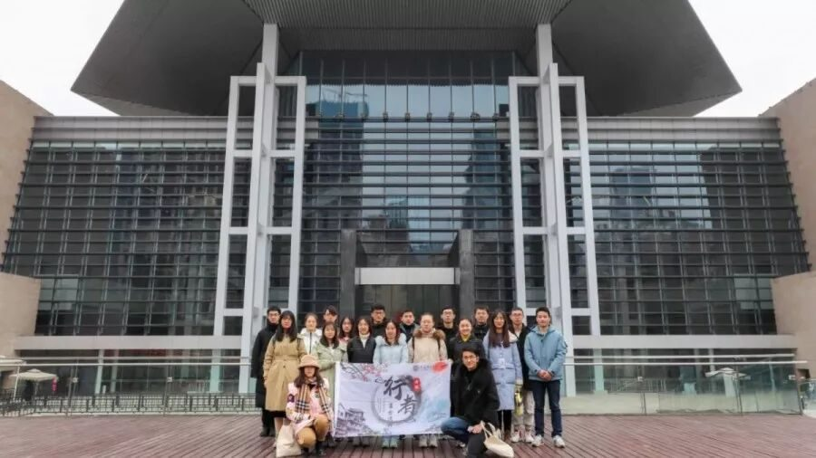
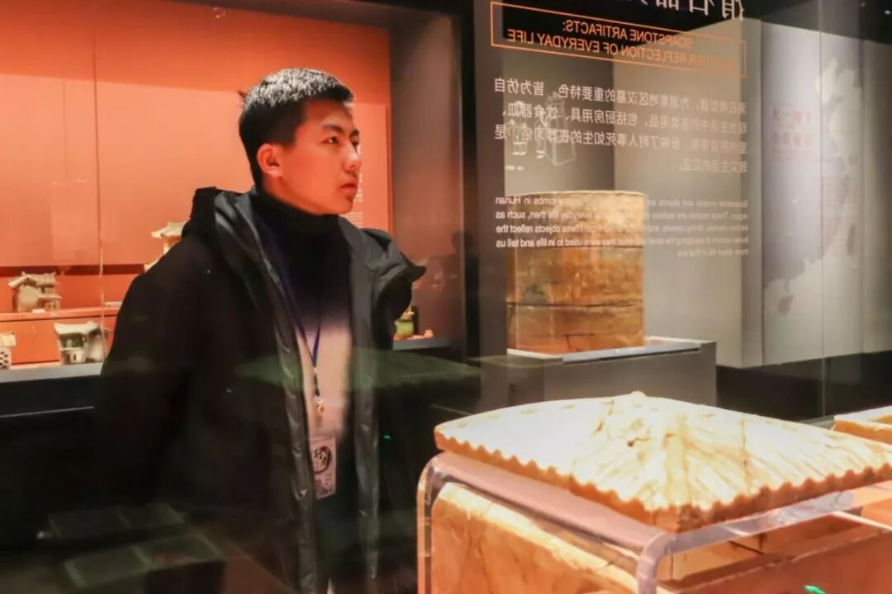
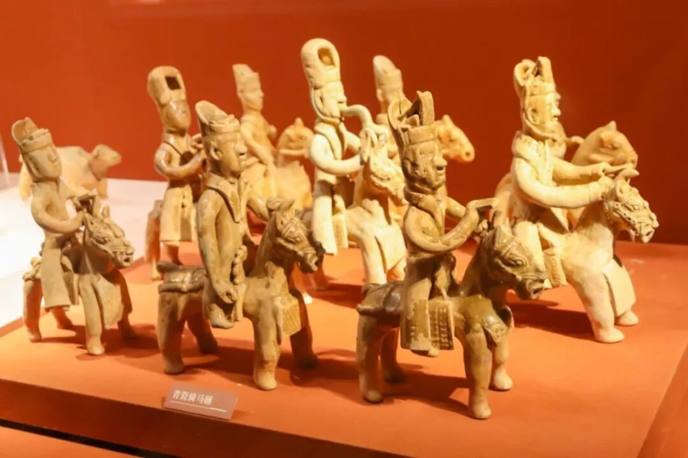
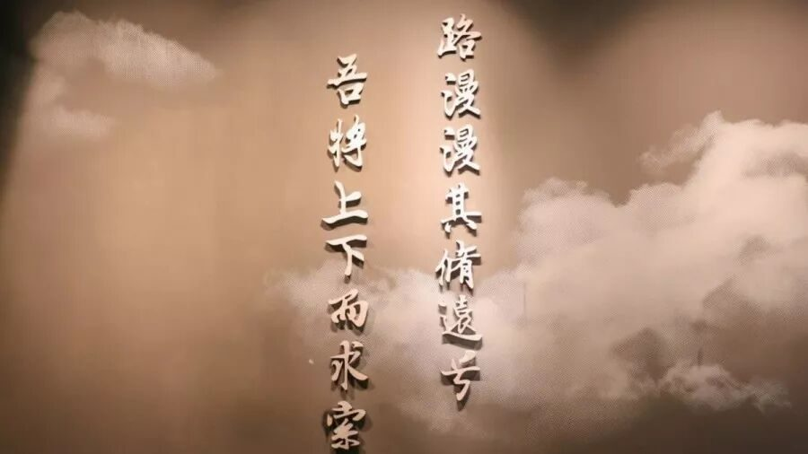
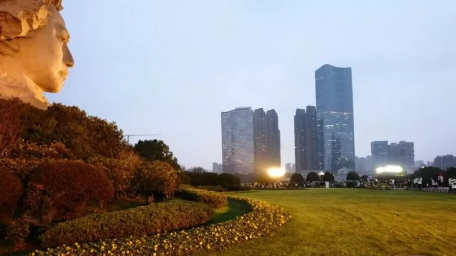

【行者无疆 言念潇湘】我言湘魂系苍生

儒化忧乐，邺侯岳麓，
服道守义，经世以致用。
肝胆昆仑，热血乾坤，
日月新天，家国成天下。
素衣简帛衬风貌，石器陶制存今朝。
铜鼎铁剑转乾坤，渔猎稻作追炎尧。
湖南，地处中南腹地，北饮森森洞庭之水，三面雄山峻岭相拥，湘资沅澧四水润泽，气候温和，土腴物丰。自50万年前，先民们便在此繁衍生息，凭借着勤劳与智慧，协耕互助，将家园逐渐经营成宋元明清时代的“天下粮仓”。“湖南熟，天下足”一句更是凸显了湖南当时重要的农业地位。
从祭祀神灵的商周青铜礼乐，到彰显生活品质的楚汉漆器；从饭稻羹鱼，到食尚香辣；从深受大众喜爱的唐长沙窑，到耕读传家的明清宗族村，无一不是湖南风俗信仰与生活方式的凝结。


个性张扬，敢为人先，忠信担当，九死无悔。馆中前言中仅仅十六字，表达的却是千百年血性固有结合移民处奋进开拓所共同演绎出的湖南人的家国情怀。


历代南来的中原人，带来了先进的生产技术和文化，推动了湖南的社会进步。从炎舜南巡传播礼仪教化，到流寓湖湘的唐宋名家，一次次的精神洗礼，使得儒化的忧乐观广为赞颂。
邺侯岳麓之沉淀
周敦颐首创理学，胡安国父子开创湖湘学派，其知行合一、经世致用的精神，契合着屈贾的忧乐观，对湖湘地区人文思想产生重大影响，孕育了近代名家辈出的人文奇观。
家国天下之情怀
执振长策安社稷的鸿鹄希冀
夫惟服道以守义的困兽之斗
虽九死其犹未悔的百折不挠
鸷鸟不群自固然的桀骜不驯
流水高山心可知的洁身自好
桃源望断无寻处的临洲叹惋
天下寒士欢颜庇的舍身取义
去留肝胆两昆仑的豪气冲天
要将热血洗乾坤的雄心抱负
敢教日月换新天的壮志狂言

声声铿锵，句句有力，字里行间透露出的都是湖南人首开风气、砥柱中流、高举大旗、引领潮流，彰显以天下为己任、为苍生谋福祉、舍我其谁的担当精神。
时至隆冬，千山暮雪，橘子洲头。
品寒江独钓，笠翁孤舟；
风染凌霜，逝者斯夫。
闲云蔽日，平生烟雨，腊月廿三走沙洲。
问青史，念江郎才俊，何者无忧？
足迹行变潇湘，观不止行者探无疆。
恰正茂风华，年少轻狂；
意气书生，心系穹苍。
中外研墨，古今挥毫，何惧百丈入风霜。
看明朝，见沧海云帆，成志一方？

就此，
我们就要与长沙别过，
曾用一天爱上，
用一周亲历，
用一学期纪念，
却要用一辈子铭记。
曾说时间会带走一切，
但愿万千思绪汇成的不舍与眷恋，
会随行者的脚步致远致臻。
湖湘文化的驰魂宕魄，
将在每一个行者的心中亘古绵延，经久不去。

来源 | 行者无疆实践团
文字 | 胡至鸿
排版 | 张清雅
图片 | 陈辉 米鑫
审核 | 段智然 康艳虎 黄玲
行者无疆实践团
QQ：2758025831

随行者一起认识世界
长按二维码